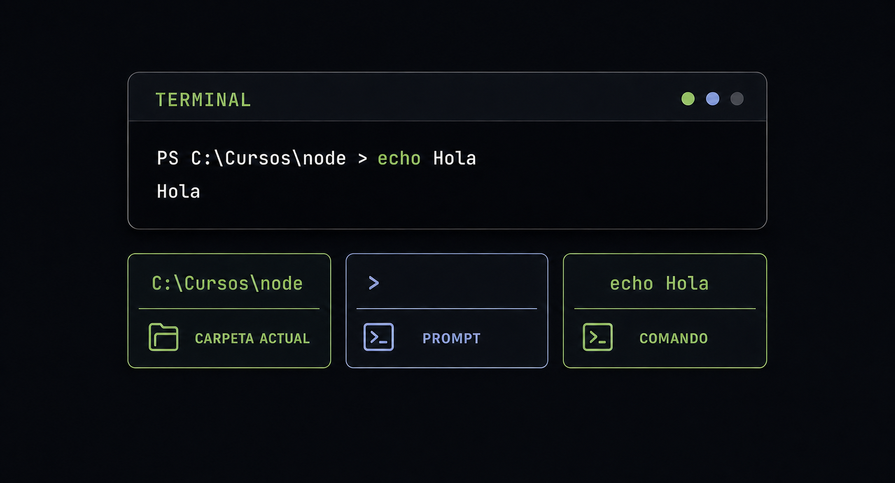

ABRÍ TU ESPACIO DE TRABAJO
Tu primer contacto con la terminal
En Visual Studio Code elegí Terminal → New Terminal. Se abrirá un panel en la parte inferior. La terminal espera instrucciones escritas llamadas comandos. Escribí uno, presioná Enter y observá la respuesta antes de continuar.

UNA CONVERSACIÓN BREVE
Cómo leer una interacción
Primero la terminal muestra dónde estás, después escribís una instrucción y finalmente devuelve una respuesta. Solo escribís el comando: el prompt y la respuesta los muestra la computadora.
Prompt
Es la línea disponible para escribir. Suele incluir la carpeta actual y termina con un símbolo como >.
Comando
Es la instrucción que escribís después del prompt. No se ejecuta hasta que presionás Enter.
Respuesta
Puede ser información, una confirmación o un error. Cuando vuelve el prompt, la terminal está lista otra vez.
PROMPTPS C:\Curso>
COMANDOecho Hola
RESPUESTAHola
NUEVO PROMPTPS C:\Curso>
UBICATE ANTES DE EJECUTAR
Seis comandos esenciales
Casi todos los comandos actúan sobre la carpeta actual. Comenzá con
pwd, mirá el contenido con ls y recién después movete o creá
una carpeta. Esta costumbre evita trabajar accidentalmente en otro lugar.
pwdMuestra en qué carpeta estás.
Confirmá tu ubicación.lsLista archivos y carpetas del lugar actual.
Buscá una carpeta conocida.cd nombreEntra en una carpeta.
Entrá enDocumentos.cd ..Vuelve a la carpeta anterior.
Regresá un nivel.mkdir semana-1Crea una carpeta nueva.
Creá la carpeta del trabajo.clearLimpia la pantalla sin borrar archivos.
Ordená la vista.Esperá a que reaparezca el prompt antes de continuar.
pwd
mkdir semana-1
cd semana-1
code .La última instrucción abre la carpeta actual en Visual Studio Code. Si ya está abierta, podés omitirla.
LEÉ LA EVIDENCIA
Si algo no sale como esperabas
Un mensaje de error no rompe la computadora. Leelo, revisá el comando y comprobá la carpeta actual antes de volver a intentarlo.
Path not found
La carpeta no existe
Ejecutá ls y copiá el nombre correcto.
not recognized
El comando no se reconoce
Revisá espacios y letras. Si acabás de instalar algo, reiniciá VS Code.
code .
El acceso directo no está disponible
Usá Archivo → Abrir carpeta y continuá.
MINI PRÁCTICA
Comprobá lo aprendido
Creá una carpeta llamada practica-terminal, entrá en ella, confirmá su ubicación con pwd y regresá con cd ...
pwd, ya dominás el objetivo de esta pantalla.
Ya tenés la base necesaria para preparar Node.js.